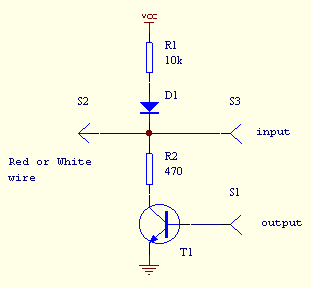

![[protocol diagram]](graphics/protocol.gif)
TI Link Protocol Guide - Hardware Link Protocol
The TI transfer bus (also called DBus) is a two-wire half-duplex
serial interface consisting of a 'red'/'tip' line (wrapped in red
insulation)
and a 'white'/'ring' line (wrapped in white insulation) with a common
ground.
Both lines are bi-directional, so outputs must be of an open-drain or
an open-collector type (such as i²C
bus for instance).
Each line is connected to the supply voltage via a pull-up resistor. A
line is then logic high when both of the
calculators hold the line high, and logic low if one or more of the
devices drives the line low.

In this way the calculator or any external device can put the line to
logical high and monitor the corresponding
input to see whether the line actually becomes high. This
open-collector structure allows the calculator to drive
an I²C device directly.
The link port normally operates in a half-duplex mode where a bit is
sent by activating the corresponding line ("ring" or "tip") and the
receiver acknowledges by activating the other line. The sender now
releases its line and finally the receiver releases the acknowledge.
An "error" condition (="abort") is signalled by activating both lines
at the same time for ~250us. Moreover, the DBus protocol specifies a
maximum bit time of 2 seconds else link time-out will occur.
Thus, each bit is made of two voltage changes on each two different
wires. The order of the first two voltage impulses
determines whether the bit is high (1) or low (0). A logical '0' is
represented by changing the red wire first,
wheras a logical '1' is represented by changing the white wire first. A
sequence of eight bit transfers constitutes
one byte, least significant bit sent first. The protocol does not allow
for a distinction of byte boundaries.
The graphing calculator models up to the TI-92 (those with a 6MHz Z80 processor) can transfer data at roughly 16 to 18 kilobits per second, whereas the TI-89, TI-92 and TI-92+ (those with the 10-MHz processor) can transfer data at roughly 45 to 50 kilobits per second. This is not very fast but it was enough for current models like TI89/92+. Later, TI introduced handhelds with USB embedded port which should allow better rates.
An example of a byte transfer: The byte represented in the
figure is 0xC9 (11001001 in binary).
The first bit transmitted is the least significant bit (LSb) and the
last one is the most significant bit
(MSb) as a serial stream.
Remember that a high status represents a closed circuit and that either
one of the calculators can pull it low.
On the other hand, a low status represents a break in the circuit, and
both calculators must close the circuit
in order to bring the line high again.
This figure shows the electrical status of the data lines during a byte
transfer:
Flow charts of 'put' and 'get' routines:
|
|
|
You will find below 2 examples of routines: one for sending, the other for receiving a byte with a parallel link cable. Link cables are described in the next section.
/*
Send a byte to the calculator
*/
int put92(char data)
{
int bit;
for(bit=0;
bit<8; bit++)
{
if(data & 1)
{
outportb(lpt_out,
2);
while((inportb(lpt_in)
& 0x10) == 1);
outportb(lpt_out,
3);
while((inportb(lpt_in)
& 0x10) == 0);
}
else
{
outportb(lpt_out,
1);
while((inportb(lpt_in)
& 0x20) == 1);
outportb(lpt_out,
3);
while((inportb(lpt_in)
& 0x20) == 0);
}
data >>= 1;
}
}
/*
Reads a byte from the calculator
*/
unsigned char get92(void)
{
int bit;
unsigned
char v, data=0;
for(bit=0; bit<8; bit++)
{
while((v = inportb(lpt_in) &
0x30) == 0x30);
if(v & 1)
{
data
= (data >> 1) | 0x80;
outportb(lpt_out,
1);
while((inportb(lpt_in)
& 0x20) == 0x00);
outportb(lpt_out,
3);
}
else
{
data
= data >> 1;
outportb(lpt_out,
2);
while((inportb(lpt_in)
& 0x10) == 0x00);
outportb(lpt_out,
3);
}
}
}
If you want use a link cable for your own project, you should know that a complete and multi-platform library exists for handling the different link cables (hardware & virtual) thru a common API. The libticables library (source and .dll/.so) can be found either on ticalc.org (unix directory of the ticalc's archives) or on the TiLP (formerly GtkTiLink) homepage.
You will find here, as a separate documentation, various documents on the parallel and serial port structure:
![[PUT routine flowchart]](graphics/put_chart.gif)
![[GET routine flowchart]](graphics/get_chart.gif)